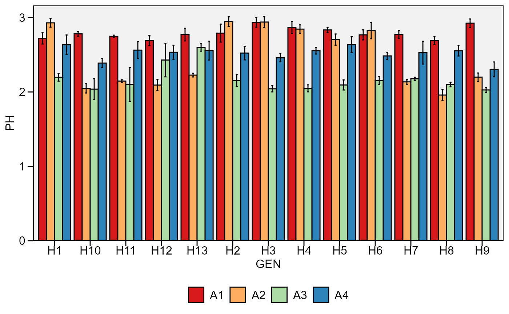
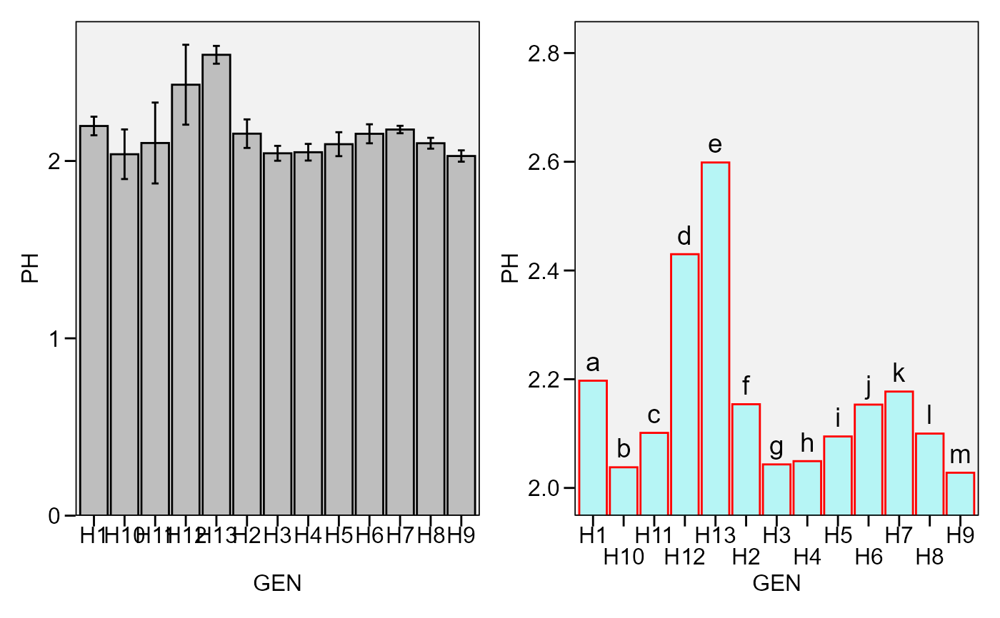

![[Stable]](figures/lifecycle-stable.svg)
plot_bars()Creates a bar plot based on one categorical variable and one numeric variable. It can be used to show the results of a one-way trial with qualitative treatments.plot_factbars()Creates a bar plot based on two categorical variables and one numeric variable. It can be used to show the results of a two-way trial with qualitative-qualitative treatment structure.
Usage
plot_bars(
.data,
x,
y,
order = NULL,
y.lim = NULL,
y.breaks = waiver(),
y.expand = 0.05,
y.contract = 0,
xlab = NULL,
ylab = NULL,
n.dodge = 1,
check.overlap = FALSE,
color.bar = "black",
fill.bar = "gray",
lab.bar = NULL,
lab.bar.hjust = 0.5,
lab.bar.vjust = -0.5,
lab.bar.angle = 0,
size.text.bar = 5,
values = FALSE,
values.hjust = 0.5,
values.vjust = 1.5,
values.angle = 0,
values.digits = 2,
values.size = 4,
lab.x.hjust = 0.5,
lab.x.vjust = 1,
lab.x.angle = 0,
errorbar = TRUE,
stat.erbar = "se",
width.erbar = NULL,
level = 0.95,
invert = FALSE,
width.bar = 0.9,
size.line = 0.5,
size.text = 12,
fontfam = "sans",
na.rm = TRUE,
verbose = FALSE,
plot_theme = theme_metan()
)
plot_factbars(
.data,
...,
resp,
y.lim = NULL,
y.breaks = waiver(),
y.expand = 0.05,
y.contract = 0,
xlab = NULL,
ylab = NULL,
n.dodge = 1,
check.overlap = FALSE,
lab.bar = NULL,
lab.bar.hjust = 0.5,
lab.bar.vjust = -0.5,
lab.bar.angle = 0,
size.text.bar = 5,
values = FALSE,
values.hjust = 0.5,
values.vjust = 1.5,
values.angle = 0,
values.digits = 2,
values.size = 4,
lab.x.hjust = 0.5,
lab.x.vjust = 1,
lab.x.angle = 0,
errorbar = TRUE,
stat.erbar = "se",
width.erbar = NULL,
level = 0.95,
invert = FALSE,
col = TRUE,
palette = "Spectral",
width.bar = 0.9,
legend.position = "bottom",
size.line = 0.5,
size.text = 12,
fontfam = "sans",
na.rm = TRUE,
verbose = FALSE,
plot_theme = theme_metan()
)Arguments
- .data
The data set.
- x, y
Argument valid for
plot_bars()The variables to be mapped to thexandyaxes, respectively.- order
Argument valid for
plot_bars(). Controls the order of the factor in thexaxis. Defaults to the order of the factors in.data. Useorder = "asce"ororder = "desc"to reorder the labels to ascending or descending order, respectively, based on the values of the variabley.- y.lim
The range of y axis. Defaults to
NULL(maximum and minimum values of the data set). New values can be inserted asy.lim = c(y.min, y.max).- y.breaks
The breaks to be plotted in the y-axis. Defaults to waiver().
authomatic breaks. The same arguments thanx.breakscan be used.- y.expand, y.contract
A multiplication range expansion/contraction factor.
y.expandexpands the upper limit of the y escale, whiley.contractcontracts the lower limit of the y scale. By defaulty.expand = 0.05andy.contract = 0produces a plot without spacing in the lower y limit and an expansion in the upper y limit.- xlab, ylab
The labels of the axes x and y, respectively. Defaults to
NULL.- n.dodge
The number of rows that should be used to render the x labels. This is useful for displaying labels that would otherwise overlap.
- check.overlap
Silently remove overlapping labels, (recursively) prioritizing the first, last, and middle labels.
- color.bar, fill.bar
Argument valid for
plot_bars(). The color and fill values of the bars.- lab.bar
A vector of characters to show in each bar. Defaults to NULL.
- lab.bar.hjust, lab.bar.vjust
The horizontal and vertical adjust for the labels in the bar. Defaults to 0.5 and -0.5, respectively.
- lab.bar.angle
The angle for the labels in the plot. Defaults to 0. Use in combination with
lab.bar.hjustandlab.bar.vjustto best fit the labels in the plot.- size.text.bar
The size of the text in the bar labels.
- values
Logical argument. Shows the values in the plot bar? Defaults to
FALSE- values.hjust, values.vjust
The horizontal and vertical adjust for the values in the bar. Defaults to 0.5 and 1.5, respectively. If
values = TRUEthe values are shown bellow the error bar.- values.angle
The angle for the labels in the plot. Defaults to 0. Use in combination with
values.hjustandvalues.vjustto best fit the values in the plot bar.- values.digits
The significant digits to show if
values = TRUE. Defaults to2.- values.size
The size of the text for values shown in the bars. Defaults to
3.- lab.x.hjust, lab.x.vjust
The horizontal and vertical adjust for the labels in the bar. Defaults to 0.5 and 1, respectively.
- lab.x.angle
The angle for the labels in x axis. Defaults to 0. Use in combination with
lab.x.hjustandlab.x.vjustto best fit the labels in the axis.- errorbar
Logical argument, set to TRUE. In this case, an error bar is shown.
- stat.erbar
The statistic to be shown in the errorbar. Must be one of the
stat.erbar = "se"(standard error, default),stat.erbar = "sd"(standard deviation), orstat.erbar = "ci"(confidence interval), based on the confidence level in the argumentlevel.- width.erbar
The width of the error bar. Defaults to 25% of
width.bar.- level
The confidence level
- invert
Logical argument. If
TRUE, rotate the plot inplot_bars()and invert the order of the factors inplot_factbars().- width.bar
The width of the bars in the graph. Defaults to 0.9. Possible values are in the range 0-1.
- size.line
The size of the line in the bars. Default to
0.5.- size.text
The size of the text. Default to
12.- fontfam
The family of the font text. Defaults to
"sans".- na.rm
Should 'NA' values be removed to compute the statistics? Defaults to true
- verbose
Logical argument. If TRUE a tibble containing the mean, N, standard deviation, standard error of mean and confidence interval is returned.
- plot_theme
The graphical theme of the plot. Default is
plot_theme = theme_metan(). For more details, seeggplot2::theme().- ...
Argument valid for
plot_factbars(). A comma-separated list of unquoted variable names. Sets the two variables to be mapped to thexaxis.- resp
Argument valid for
plot_factbars(). The response variable to be mapped to the y axis.- col
Logical argument valid for
plot_factbars(). IfFALSE, a gray scale is used.- palette
Argument valid for
plot_factbars()The color palette to be used. For more details, see?scale_colour_brewer- legend.position
The position of the legend in the plot.
Author
Tiago Olivoto tiagoolivoto@gmail.com
Examples
# \donttest{
library(metan)
# two categorical variables
plot_factbars(data_ge2,
GEN,
ENV,
resp = PH)

# one categorical variable
p1 <- plot_bars(data_g, GEN, PH)
p2 <- plot_bars(data_g, GEN, PH,
n.dodge = 2, # two rows for x labels
y.expand = 0.1, # expand y scale
y.contract = -0.75, # contract the lower limit
errorbar = FALSE, # remove errorbar
color.bar = "red", # color of bars
fill.bar = alpha_color("cyan", 75), # create a transparent color
lab.bar = letters[1:13]) # add labels
arrange_ggplot(p1, p2)

# }